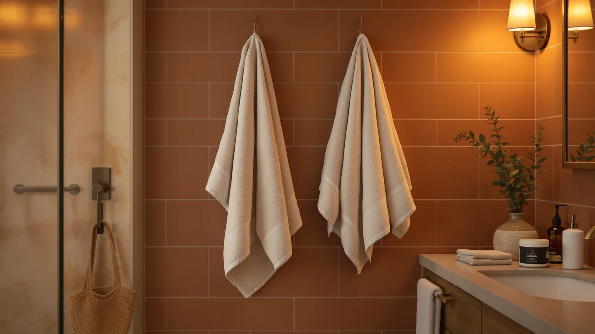

How to Clean Bath Towels with Vinegar: Complete Guide (2026)
Prices and picks verified as of September 2026. Independent, reader-supported reviews.


Things to Know Before You Buy
- Vinegar and detergent do not mix well. Run the vinegar wash on its own cycle, since combining the two in one load cancels out most of the cleaning power of both.
- Distilled white vinegar only. Apple cider or malt vinegar can leave color and residue behind, while distilled white vinegar rinses clean and leaves no smell once towels are dry.
- Baking soda finishes what vinegar starts. A separate baking soda cycle after the vinegar wash lifts the odor molecules vinegar loosens but does not fully remove.
- Save this for a monthly reset. Running straight vinegar every wash skips detergent's cleaning power, so reserve the treatment for towels that turn stiff or musty despite normal washing.
Learning how to clean bath towels with vinegar gives you a way to strip out the detergent film, body oil, and mineral buildup that a normal wash cycle leaves behind. Towels that go through the laundry every week still trap a slow layer of residue, and after a few months that residue turns into the flat, musty smell that plain detergent cannot touch. Vinegar dissolves that buildup instead of masking it, which is why it works even on towels that already smell sour straight out of the dryer.
Run this treatment monthly alongside your regular laundry, as a periodic reset for towels that already see a normal wash every week. Two focused cycles pull months of residue out of the cotton, then a normal dry finishes the job. The five steps below cover sorting, the vinegar cycle, the baking soda follow-up, drying, and how often to repeat the whole process so your towels stay fresh between treatments.
What You'll Need
- Supplies: White distilled vinegar, baking soda, mild liquid laundry detergent (for your next regular wash)
- Tools: Washing machine, clothes dryer or a drying line
Step 1: Sort Your Towels and Check for Buildup
Start by separating your towels by color the same way you would for a normal wash. New colored towels still bleed dye for the first several cycles, and hot water pulls color faster than warm, so keep whites and darks apart before the vinegar treatment starts.
Check whether your towels actually need this treatment. Towels that feel stiff no matter how much detergent you use, or that smell sour within a few hours of drying, show the buildup that a vinegar wash for bath towels targets directly. If your towels came out of a normal wash today and still smell fine, save the vinegar and baking soda for a set that needs it more.
Glance at the care label while you are at it. Vinegar is safe for cotton, linen, and most blended bath towels, but skip this treatment on anything labeled dry-clean only or backed with rubber, since the acid can break down glue and rubber over repeated washes.
Step 2: Run a Hot Wash With Vinegar Only
Load the washer with towels only, no detergent, and set it to the hottest cycle the care label allows. Pour one cup of white distilled vinegar into the drum for a small load, or up to two cups for a full one, either straight in with the towels or into the softener dispenser if your machine has one.
Vinegar's acidity breaks down the soap film, body oil, and mineral deposits that build up in cotton fibers over months of normal washing. Running this cycle without detergent matters here, because vinegar and most detergents partly neutralize each other, and you lose the cleaning effect of both.
Let the full cycle run, including the rinse. You will likely notice the water looks cloudier than a normal wash, which is the residue the vinegar pulled out of the fabric.
Step 3: Follow With a Baking Soda Wash
Once the vinegar cycle ends, leave the towels in the machine and start a second hot cycle. This time add half a cup of baking soda directly to the drum instead of detergent.
Baking soda picks up where vinegar leaves off. It is mildly abrasive and alkaline, so it lifts the last of the odor-causing residue that the acidic vinegar wash loosened but did not fully rinse away. Keeping the two cycles separate, instead of combining vinegar and baking soda in one load, keeps both compounds active rather than fizzing out on contact.
Two cycles back to back sounds like a lot for a load of towels, but each one uses water and time you already have and skips detergent and its cost entirely, so the extra cycle mostly costs patience.
Step 4: Dry Without Fabric Softener
Move the towels to the dryer and run them on medium heat rather than the highest setting. High heat scorches the small loops that give a towel its texture, and a treatment meant to restore softness should not undo itself with an aggressive dry.
Skip fabric softener and dryer sheets on this load. Both coat cotton in a thin film, close to the same buildup the vinegar wash for bath towels removed. Toss in two or three wool dryer balls instead for extra fluff. They separate the towels in the drum so warm air reaches every layer and cuts drying time without leaving any residue behind.
Pull the towels out as soon as the cycle ends. Towels left sitting warm and damp in a closed dryer start to smell within the hour, undoing a chunk of the work the vinegar and baking soda cycles did.
Step 5: Repeat the Vinegar Treatment Monthly
Once a month is enough for most households running a normal weekly towel wash in between. If several people share one bathroom, or towels sit damp between uses more often than they should, every two to three weeks keeps the smell from creeping back sooner.
Watch for two signs that tell you it is time to run this cleaning method for bath towels again: a musty smell that shows up within hours of a normal wash, and towels that stay stiff no matter how little detergent you use. Either one means residue has built back up past what a regular cycle can rinse out.
Between treatments, the habits that keep towels fresh longer are simple: use less detergent than the bottle recommends, skip softener, and hang towels to dry fully instead of leaving them balled up on a hook. Do that and monthly vinegar washing may stretch to every six weeks instead.
Common Mistakes to Avoid
A few habits undercut the vinegar method for bath towels before it gets the chance to work. The most common is mixing vinegar and detergent in the same cycle. Detergent is alkaline and vinegar is acidic, so combined they mostly cancel out, leaving you with a wash that cleans worse than either one alone. Run the vinegar cycle by itself, with no detergent in the dispenser or drum.
Using too much vinegar is another trap. More than two cups in a standard load will not clean towels any better, and on some rubber-gasket front-loaders, repeated strong vinegar washes can dry out the seal over a few years. Stick to the one-to-two-cup range and let the cycle do the work.
Skipping the baking soda step is a mistake too, since it clears the odor molecules vinegar loosens but leaves behind. A vinegar-only wash leaves towels cleaner, but the musty smell often creeps back within a week without the follow-up cycle.
Drying on high heat right after the treatment is the last common slip. That heat can set any residue the wash missed and scorches the pile you spent the whole routine softening. Medium heat and a prompt removal from the dryer protect the results, and running the whole routine on a schedule, rather than waiting until towels already smell bad, keeps buildup from reaching that point at all.
Our Top Picks
A vinegar treatment restores towels you already own, and it works best on towels sturdy enough to survive repeated hot washing. If you are shopping for towels that can handle this kind of monthly deep clean, these three are built from fabric dense enough to take the heat and agitation in stride.

Editor's Pick
Towel Wrap For Women After
This terry wrap is cut from thick cotton that holds up to a hot vinegar wash without the seams pulling loose, and it is priced low enough to replace without much thought.
$11.98
Check Price on Amazon
Best Value
Maisonette Loft 100% Egyptian Cotton
The long-staple Egyptian cotton in this set resists the pilling that a stripped-down vinegar wash can expose in cheaper towels, so the extra cost buys durability more than looks.
$67.35
Check Price on Amazon
Premium Choice
DII Men's Terry Shower Wrap
This terry wrap trades a bit of plushness for a denser weave that shrugs off the higher heat a vinegar and baking soda cycle needs to work.
$25.99
Check Price on AmazonFrequently Asked Questions
Does vinegar actually get bath towels clean?
Vinegar works alongside detergent rather than replacing it, excelling at stripping the soap film, body oil, and mineral deposits that build up after months of regular washing. Use it as a periodic deep clean, and pair it with a baking soda cycle to remove the odor that plain vinegar loosens but does not fully clear.
Can you use apple cider vinegar instead of white vinegar?
Stick with distilled white vinegar for this treatment. Apple cider vinegar and other flavored vinegars carry natural coloring and sugars that can leave faint stains on light towels and a lingering smell that white vinegar rinses away completely.
Will vinegar hurt my washing machine?
Diluted vinegar in a normal wash load is safe for most washing machines, including the rubber gaskets on front-loaders, as long as you keep it to the one-to-two-cup range and skip weekly straight-vinegar cycles. Some high-efficiency machine manufacturers advise against frequent concentrated vinegar washes, so check your manual if you plan to run this method more than once a month.
How much vinegar should you use for a load of towels?
Use one cup of white distilled vinegar for a half load and up to two cups for a full load of bath towels. Pour it straight into the drum with the towels or into the fabric softener dispenser, and skip detergent entirely for that cycle.
Can you put vinegar and baking soda in the wash at the same time?
Keep them in separate cycles. Vinegar is acidic and baking soda is alkaline, so combined in the same wash they react and fizz instead of doing their individual jobs, and you lose most of the cleaning benefit of both.
Verdict
Knowing how to clean bath towels with vinegar gives you a low-cost way to reset a set that regular detergent washing cannot fully refresh. Run one hot cycle with plain vinegar, follow it with a baking soda cycle, dry on medium heat without softener, and repeat about once a month or whenever towels turn stiff or start smelling musty within hours of drying. The whole routine costs a few dollars in supplies and takes roughly two hours from start to a warm, dry towel.
This treatment works best on towels dense enough to survive repeated hot washing without thinning out. The EEEYLK Towel Wrap holds up well to this kind of monthly reset, since its thick cotton terry takes the heat and agitation without the seams pulling apart the way they do on thinner wraps. Build the vinegar routine into your regular laundry schedule and a good towel set stays fresh and absorbent for years instead of turning stiff and sour within a season.